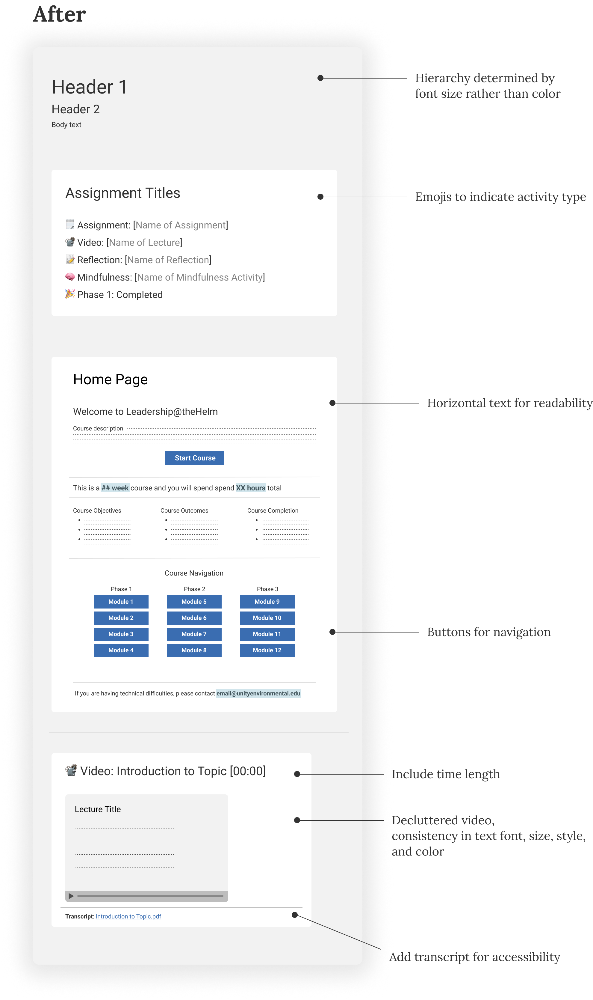
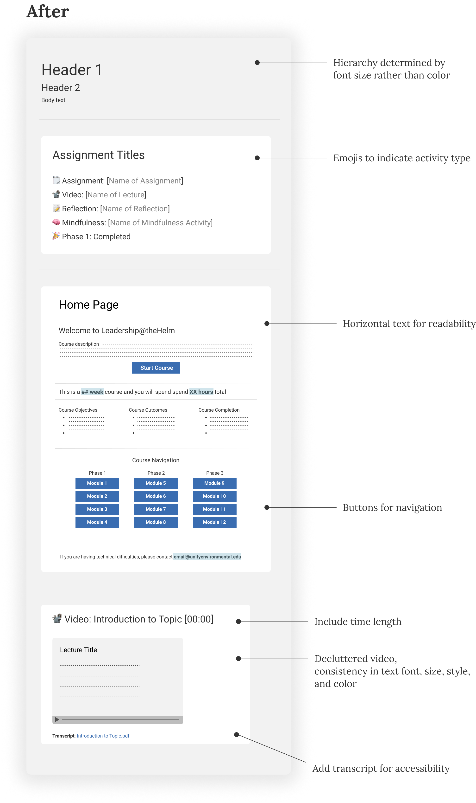

Our client at SeaChange Resources has an online program called Leadership@theHelm, which provides lectures and resources helping users improve their leadership skills.
All rights for the materials remain with Unity Environmental University and Seachange
Resources.
Because this program is used internally, the content and parts of the research will be kept
confidential.
Product Designer
Cross functional partnership between our team at Unity Workplace Learning and Marketing, with SMEs at Seachange Resources
June 2023 - March 2024
What do we know about the users?
Conversations with our client in ideation sessions show that their target audience includes older adults, mostly scientists and professors. Most users not only struggle with basic technological literacy but are unfamiliar with modern-day corporate language. In the product redesign, they were especially interested in making the course easier to use.
These are some pain points our team identified based on the user survey and interviews from previous users:
Our client wanted to continue using a traditional, classroom-based learning style in their product. This would include hour-long lectures, extensive assignments, and dense learning materials. They appeared reluctant to make too many changes from what they were familiar with.
However, we believed there was a better, easier way to create this product. To build our case, I started by researching successful EdTech companies and identifying the things they did that made them popular with their intended audience.
Here are some of the qualities we identified for the Minimum Viable Product:
Here are the changes I suggested to the clients based on the comparative analysis:
We created a micro-module showcasing what it could look like to implement these changes. After we presented this to them, our client became excited by the new direction as well as the possibility of bringing new changes to this product.
The old styleguide was heavy on using dark green colors with a dark background while lacking a clear text hierarchy. There were a lot of different fonts and long clusters of text that made the material difficult to read, especially when most of them were in columns of different lengths.
It was true that the visuals had a lot of room for improvement; however, my goal with the styleguide was to not only make the UI look better but to make it easier for people to use this product.
 

The old videos were heavily cluttered, with large blocks of text and pictures crowding the screen. The person narrating the lectures was fixed in the bottom right-hand corner. At random intervals, the lecture would suddenly stop and notify the user that they needed to complete a time-consuming assignment. However, there was no way to confirm that the assignment was submitted before the user could proceed with the lecture. There was also no way to bookmark your progress on the lecture, so if you refreshed the page or logged out, you had to start from the beginning.
Using Adobe Premiere Pro, I took the existing lectures and cut them into shorter lectures based on topics. I also edited the videos by shortening the text and animating it to appear line by line as the speaker mentions the topic.

I made changes to the information architecture, reorganizing items in the product to make it more intuitive and easy to navigate.
One example was how I created the Course Resources tab. Previously, there were many different paths to finding the Course Resources, all deeply embedded in different modules. Sometimes, it would show resources for one module, and other times it would show resources for all modules. It was confusing and inconsistent, taking around 4 or 5 clicks from the home page to reach the final destination from multiple starting points.
I changed this by putting all the resources into a single page, which users can access with just one click by placing the Course Resources as an option on the left-hand navigation. I also ordered the resources by phases and modules, making it easier to find visually. This was especially well received by the client, as they wanted users to maintain access to the resources after they left the program, so consolidating it simplified that process.
100% of feedback regarding the changes have been positive:
We are happy to see that our clients are happy. Of course, there is always room for improvement. There are already talks on what changes can be made for the next iteration, specifically about reshooting some of the lectures and updating the language used in the learning material.
I have learned a lot from this experience. I had to push myself to learn more about Adobe Creative Cloud, as well as create animations to brighten up the learning experience. It was also the first time I took charge of a project and presented it to the stakeholders while projecting confidence about my work. It tested my communication skills, as well as my ability to explain design decisions to the clients in a way they could understand and get behind.
Overall, this was a great partnership. I have also included a picture of a thank you card that they sent to our team!